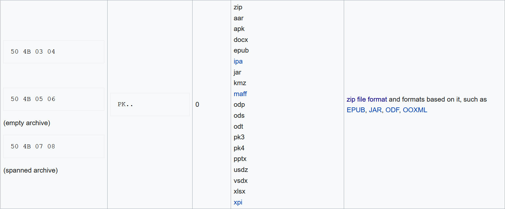
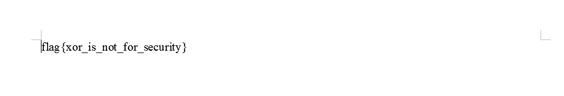

Docxor
Getting hints from the name, one could tell, it is XOR and its about a doc.
Still, first thing to consider is running the file command to see whats the homework file is about
file homework
homework: data
Cool! this means, the homework file is simply XOR encryption of a .doc file with 4 byte key. But hey that should ring bells since the first few bytes are file signature also called magic bytes sometimes.
Using the magic bytes, we can recover the xor key and hence the full document after xoring with the xor key.

The magic bytes we seek are 50 4B 03 04.
The first four bytes of the homework are 0a0a 9abf, the xor key should be 0a0a9abf ^ 504b0304 = 5a4199bb
Lets write a quick script.
from pwn import xor
with open('homework', 'rb') as homework_file:
homework_data = homework_file.read()
HEADER = homework_data[0:4]
MAGIC = b"\x50\x4B\x03\x04"
XOR_KEY = xor(HEADER, MAGIC)
with open('decrypted.doc', 'wb') as decrypted:
decrypted.write(xor(XOR_KEY, homework_data))
This produces decrypted.doc which when opened looks like
